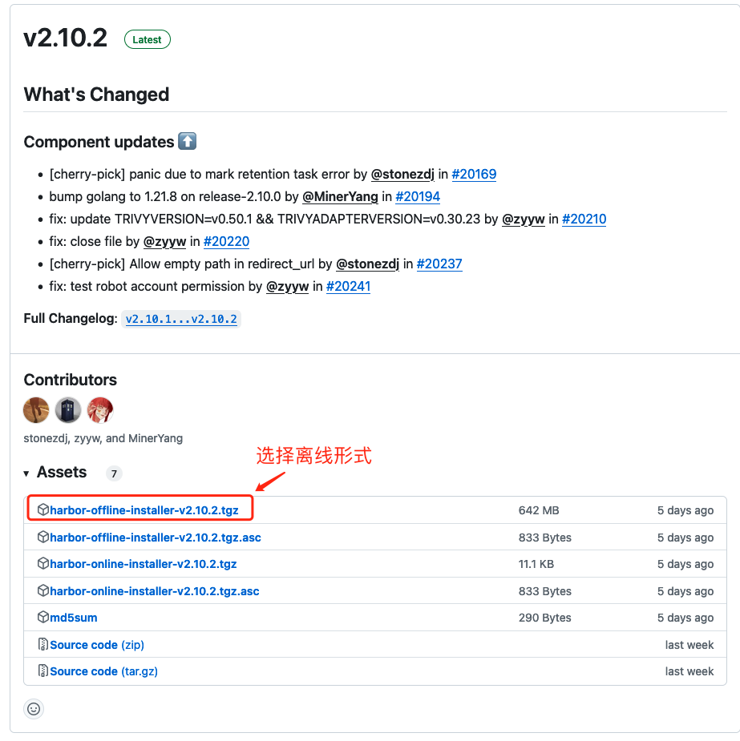
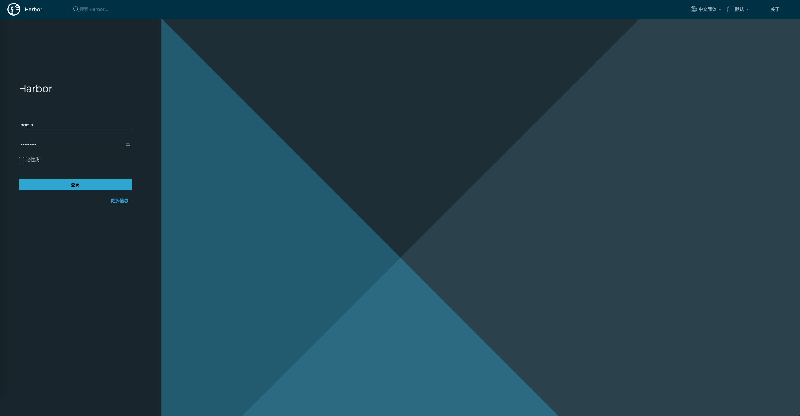

harbor 安装与配置
前期准备
依赖docker和 docker-compose环境
请参考
👉🏻 docker 安装与配置
👉🏻 harbor 官方文档
安装 harbor
1、下载离线包
harbor 离线包下载地址 
# Step 1: 下载选中的离线版本
wget https://github.com/goharbor/harbor/releases/download/v2.10.2/harbor-offline-installer-v2.10.2.tgz
2、准备证书文件
注: 如果不使用域名这一步可以跳过
证书购买请参考，阿里云官方文档 👉🏻 SSL 证书快速上手
这里配置域名，下载后的 ssl 配置文件为 12808420_harbor.app.love_nginx.zip
3、安装
解压下载的文件
# Step 1: 解压harbor 离线安装包
tar -zxvf harbor-offline-installer-v2.10.2.tgz -C /usr/local/
# Step 2: 解压 ssl 证书
unzip 12808420_harbor.app.love_nginx.zip -d /usr/local/harbor/ssl/
4、配置
复制配置文件
# Step 1: 进入harbor 目录
cd /usr/local/harbor
# Step 2: 拷贝配置文件
cp harbor.yml.tmp harbor.yml
修改配置文件
# Configuration file of Harbor
# The IP address or hostname to access admin UI and registry service.
# DO NOT use localhost or 127.0.0.1, because Harbor needs to be accessed by external clients.
-hostname: reg.mydomain.com
+hostname: harbor.app.love
# http related config
http:
# port for http, default is 80. If https enabled, this port will redirect to https port
port: 80
# https related config
https:
# https port for harbor, default is 443
port: 443
# The path of cert and key files for nginx
- certificate: /your/certificate/path
+ certificate: /usr/local/harbor/ssl/harbor.app.love.pem
- private_key: /your/private/key/path
+ private_key: /usr/local/harbor/ssl/harbor.aoo.love.key
# # Uncomment following will enable tls communication between all harbor components
# internal_tls:
# # set enabled to true means internal tls is enabled
# enabled: true
# # put your cert and key files on dir
# dir: /etc/harbor/tls/internal
# Uncomment external_url if you want to enable external proxy
# And when it enabled the hostname will no longer used
# external_url: https://reg.mydomain.com:8433
# The initial password of Harbor admin
# It only works in first time to install harbor
# Remember Change the admin password from UI after launching Harbor.
- harbor_admin_password: Harbor12345
+ # 这里的是admin账户的密码，要在启动前改动，否则后期改动无效
+ harbor_admin_password: YourPassw0rd
# Harbor DB configuration
# The default data volume
data_volume: /data
...
5、启动 harbor
# Step 1: 创建数据目录
mkdir /data
# Step 2: 进入harbor目录
cd /usr/local/harbor
# Step 3: 执行prepare命令，进入准备启动阶段，这里会检测你的环境等
./prepare
# Step 4: 准备阶段完成后，启动下载harbor，这里会下载并运行7个镜像
./install.sh
使用 docker ps 查看是否启动(STATUS 均为 healthy 为成功，starting 说明在启动中)
CONTAINER ID IMAGE COMMAND CREATED STATUS PORTS NAMES
f33fa914b17a goharbor/harbor-jobservice:v2.10.1 "/harbor/entrypoint.…" 4 days ago Up 4 days (healthy) harbor-jobservice
0056d04b6077 goharbor/nginx-photon:v2.10.1 "nginx -g 'daemon of…" 4 days ago Up 4 days (healthy) 0.0.0.0:80->8080/tcp, :::80->8080/tcp, 0.0.0.0:443->8443/tcp, :::443->8443/tcp nginx
94f9f5615503 goharbor/harbor-core:v2.10.1 "/harbor/entrypoint.…" 4 days ago Up 4 days (healthy) harbor-core
b23a4327987d goharbor/harbor-registryctl:v2.10.1 "/home/harbor/start.…" 4 days ago Up 4 days (healthy) registryctl
d1337e58ec54 goharbor/redis-photon:v2.10.1 "redis-server /etc/r…" 4 days ago Up 4 days (healthy) redis
4f4aeeae61dd goharbor/harbor-db:v2.10.1 "/docker-entrypoint.…" 4 days ago Up 4 days (healthy) harbor-db
d4ef619a56d0 goharbor/harbor-portal:v2.10.1 "nginx -g 'daemon of…" 4 days ago Up 4 days (healthy) harbor-portal
d3ef7071fd2a goharbor/registry-photon:v2.10.1 "/home/harbor/entryp…" 4 days ago Up 4 days (healthy) registry
6e10fd5cd5f3 goharbor/harbor-log:v2.10.1 "/bin/sh -c /usr/loc…" 4 days ago Up 4 days (healthy) 127.0.0.1:1514->10514/tcp harbor-log
5、访问 harbor
通过域名访问

终端操作
# Step 1: 在要使用harbor的主机上创建 /etc/docker/daemon.json 文件
sudo tee /etc/docker/daemon.json <<-'EOF'
{
"registry-mirrors": [https://harbor.app.love"]
}
EOF
# Step 2: 重启daemon
systemctl daemon-reload
# Step 3: 重启docker
systemctl restart docker
# Step 4: 登陆harbor（注意：docker login harbor的地址）
docker login harbor.app.love -u admin -p YourPassw0rd
登录输出如下
WARNING! Using --password via the CLI is insecure. Use --password-stdin.
WARNING! Your password will be stored unencrypted in /root/.docker/config.json.
Configure a credential helper to remove this warning. See
https://docs.docker.com/engine/reference/commandline/login/#credentials-store
Login Succeeded
6、集成到 k8s
在对应命名空间，创建secret后引用即可
kubectl create secret docker-registry docker-key \
--docker-server=harbor.app.love \
--docker-username='admin' \
--docker-password='YourPassw0rd' \
--docker-email='email@email.com' \
-n app-test
引用如下
---
spec:
containers: ...
imagePullSecrets:
- name: docker-key